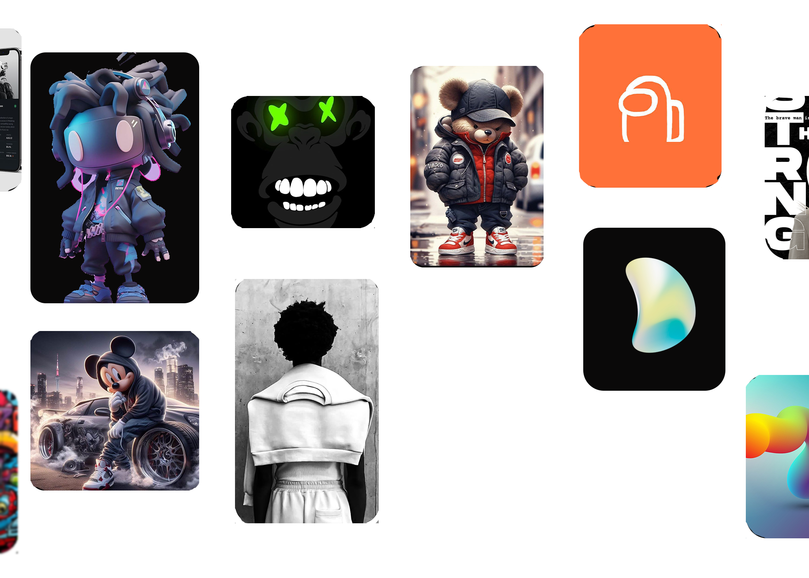

A magical new way to create an art.
Welcome to the next generation of website builders.It's never been easier to create a website.Expand your business with Ai-ken.
Welcome to the next generation of website builders.It's never been easier to create a website.Expand your business with Ai-ken.

Drops
Designed by Foundations
Designed by Foundations
Ai-ken is able to generate unique, realistic images
Ai-ken renders images and artwork based on a text description. It has the ability to combine various concepts, attributes, and styles in its creations.
Customizable image generation
Our AI algorithm allows users to specify certain parameters or constraints for image generation, such as the size or color of the output image